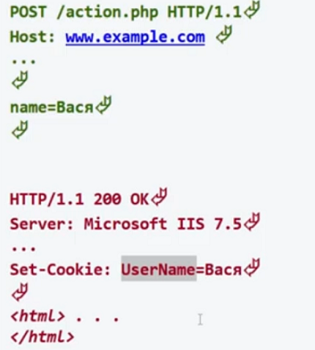
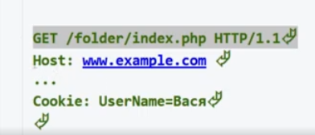

Как работают куки. Пользователь заполняет форму и пишет в одном из полей своё имя, затем отправляет форму. Форма приходит на сервер и он запускает обработчик, который должен обработать эту форму. В обработчике мы из массивов $_GET или $_POST получаем имя пользователя и с помощью функции:
//создание временной куки, пока открыт браузер
setcookie("UserName", "Вася");
//создание долговременной куки, даже если закрыть и открыть браузер, кука сохранится, для этого нужно передать текущую метку времени + 1 час или сколько нужно часов
setcookie("UserName", "Вася", time()+3600);
У этой функции есть и другие параметры, но они редко используются, если нужно будет, то можно посмотреть в видео специалиста Уровень 2, день 1 с 00:26:50
говорим серверу, чтобы он, когда пошлёт ответ обратно, то послал куку с помощью заголовка ответа Set-Cookie:
Браузер примет эту куку(UserName=Вася) и сохранит у себя в LocalStorage. И в следующий раз, когда идёт запрос опять на этот же сайт, браузер смотрит, а оставлял ли куку этот сайт, если да, то он отправляет эти куки ему обратно и сервер уже видит, что это не новый посетитель, а это Вася, который уже заходил как то:
Так как setcookie() говорит серверу послать заголовок, то с заголовками есть одна особенность, их нельзя посылать если до послания заголовка в коде есть что то типо echo или что то что выводит на экран. Все заголовки должны быть опеределены до этих конструкций. Эти конструкции для заголовков что то типа return в функции после которых код не выполняется. Вот так мы не сможем послать заголовок:
echo "Привет";
setcookie("name", "Jhon");
Чтобы прочитать куку пришедшую от браузера есть глобальный массив $_COOKIE, в который сам php раскидал уже все пришедшие куки от браузера. Чтобы получить куку UserName=Вася, то просто обращаемся так:
$_COOKIE["UserName"]; //получим Вася
Вот такой мини код можно написать, когда с первого раза мы отправляем куку, а со второго прихода уже знаем кто это и привествуем его:
if(isset($_COOKIE['name'])){
echo "Привет" . $_COOKIE['name'];
}else{
setcookie("name", "Jhon");
}
setcookie("UserName", "Вася", time()-3600);
Посылаем массив в куки, для этого мы массив сначала запаковываем в строку с помощью serialize(), посылаем, а когда обратно приходит, то распаковываем и получаем массив:
$user = [
'name' => 'Jhon',
'login' => 'root',
'password' => '1234'
]
//echo serialize($user); // a:3:{s:4:"name";s:4:"Jhon";s:5:"login";s:4:"root";s:8:"password";s:4:"1234";}
$str = serialize($user);
setcookie("user" $str);
$user = unserialize($_COOKIE["user"]);// $user === array
Но запакованная строка с помощью serialize() может развалится, потому как ней много : и "", поэтому дополнительно её упаковывают в функцию base64_encode() для сохранения целостности, потому что эта функция выдаст строку, где только буквы лат. алфавита и цифры:
$user = [
'name' => 'Jhon',
'login' => 'root',
'password' => '1234'
]
//echo serialize($user); // a:3:{s:4:"name";s:4:"Jhon";s:5:"login";s:4:"root";s:8:"password";s:4:"1234";}
//echo base64_encode(serialize($user));//YTozOntzOjQ6Im5hbWUiO3M6NDoiSmhvbiI7czo1OiJsb2dpbiI7czo0OiJyb290IjtzOjg6InBhc3N3b3JkIjtzOjQ6IjEyMzQiO30=
$str = base64_encode(serialize($user));
setcookie("user" $str);
$user = unserialize(base64_decode($_COOKIE["user"]));// $user === array
Тут пользователь Настя заходит на наш сайт и посылает форму со своим именем, мы опускаем тут получение её имени, оно уже у нас есть. Мы посылаем куку массив где держим количество посещений и дату посещения и в следующий раз когда Настя приходит снова, мы встречаем её сообщение, где говорим какой по счёту раз она к нам пришла и когда последний раз была у нас:
if(isset($_COOKIE['user'])){
$user = unserialize(base64_decode($_COOKIE["user"]));
$user["visitCounter"]++;
$data = $user["lastVisit"];
$user["lastVisit"] = date("d-m-Y H:i:s");
$str = base64_encode(serialize($user));
setcookie("user", $str);
echo "Привет {$user['name']}, ты посетила нас {$user['visitCounter']}й раз, твой последний визит был {$data}";
}else{
$user = [
"visitCounter" => 0,
"lastVisit" => date("d-m-Y H:i:s"),
"name" => "Настя"
];
$user["visitCounter"]++;
$str = base64_encode(serialize($user));
setcookie("user", $str);
echo "Добро пожаловать!!!";
}